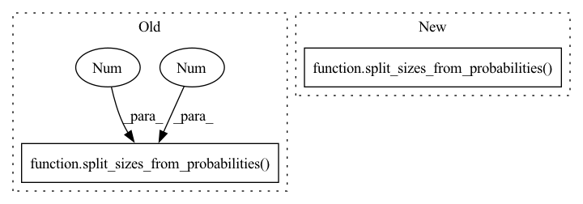

Pattern ID :5784

Before Change
if self.use_deterministic:
return
data_splits_list = split_sizes_from_probabilities(datalen, 0.8, 0.1)
self.train_set, self.valid_set, self.test_set = random_split(
self.fulldataset,
data_splits_list,
After Change
return
// split data based on provided probabilities
data_splits_list = split_sizes_from_probabilities(
datalen,
train_probability=self.train_probability,
val_probability=self.val_probability,
test_probability=self.test_probability)
self.train_set, self.val_set, self.test_set = random_split(
self.fulldataset,
data_splits_list,
In pattern: SUPERPATTERN
Frequency: 3
Non-data size: 2
Instances
Fragment ID: 20347958
Project Name: danbider/lightning-pose
Commit Name: 2191bf76b94a0fddd5d09573e45479157c4029af
Time: 2021-10-18
Author: themattinthehatt@gmail.com
File Name: pose_est_nets/datasets/datamodules.py
M Class Name: BaseDataModule
N Class Name: BaseDataModule
M Method Name: setup(2)
N Method Name: setup(2)
M Parent Class: pl.LightningDataModule
N Parent Class: pl.LightningDataModule
M File Name: pose_est_nets/datasets/datamodules.py
N File Name: pose_est_nets/datasets/datamodules.py
M Start Line: 75
M End Line: 85
N Start Line: 106
N End Line: 156
'>
Before Change
make sure we count examples properly
total_number = 103
out = random_split(
range(total_number), split_sizes_from_probabilities(total_number, 0.8, 0.1, 0.1)
)
assert len(out[0]) == 82 and len(out[1]) == 10 and len(out[2]) == 11
out = random_split(
range(total_number), split_sizes_from_probabilities(total_number, 0.8, 0.1)
After Change
assert out[0] == 70 and out[1] == 15 and out[2] == 15
// test that extra samples end up in test
out = split_sizes_from_probabilities(101, train_probability=0.7)
assert out[0] == 70 and out[1] == 15 and out[2] == 16
'>
Fragment ID: 20347959
Project Name: danbider/lightning-pose
Commit Name: 2191bf76b94a0fddd5d09573e45479157c4029af
Time: 2021-10-18
Author: themattinthehatt@gmail.com
File Name: tests/test_datasets_utils.py
M Class Name: AnonimousClass
N Class Name: AnonimousClass
M Method Name: test_split_sizes_from_probabilities(0)
N Method Name: test_split_sizes_from_probabilities(0)
M Parent Class:
N Parent Class:
M File Name: tests/test_datasets_utils.py
N File Name: tests/test_datasets_utils.py
M Start Line: 8
M End Line: 15
N Start Line: 7
N End Line: 35
'>
Before Change
make sure we count examples properly
total_number = 103
out = random_split(
range(total_number), split_sizes_from_probabilities(total_number, 0.8, 0.1, 0.1)
)
assert len(out[0]) == 82 and len(out[1]) == 10 and len(out[2]) == 11
out = random_split(
range(total_number), split_sizes_from_probabilities(total_number, 0.8, 0.1)
After Change
train_probability=train_prob)
assert out[0] == 80 and out[1] == 10 and out[2] == 10
out = split_sizes_from_probabilities(
total_number,
train_probability=train_prob,
val_probability=val_prob)
assert out[0] == 80 and out[1] == 10 and out[2] == 10
out = split_sizes_from_probabilities(
total_number,
'>
Fragment ID: 20347966
Project Name: danbider/lightning-pose
Commit Name: 986cb29acb530718642008a956ea5a8f9aab277c
Time: 2021-10-18
Author: themattinthehatt@gmail.com
File Name: tests/test_datasets_utils.py
M Class Name: AnonimousClass
N Class Name: AnonimousClass
M Method Name: test_split_sizes_from_probabilities(0)
N Method Name: test_split_sizes_from_probabilities(0)
M Parent Class:
N Parent Class:
M File Name: tests/test_datasets_utils.py
N File Name: tests/test_datasets_utils.py
M Start Line: 8
M End Line: 15
N Start Line: 7
N End Line: 35